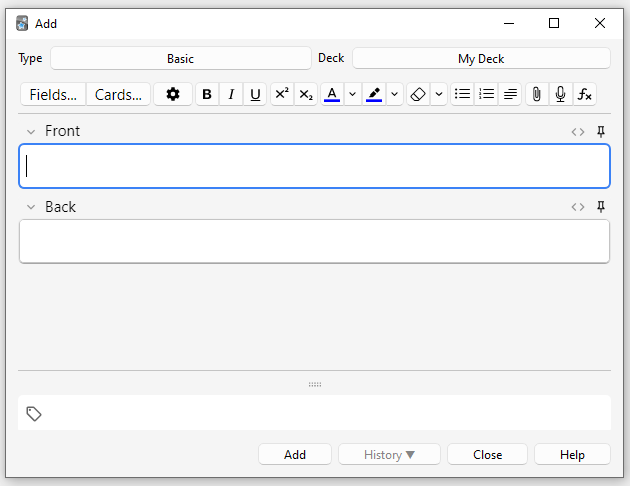
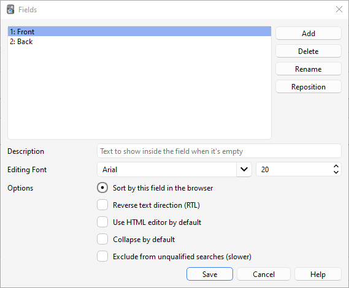
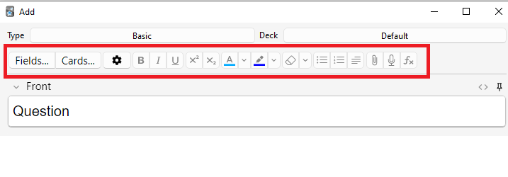
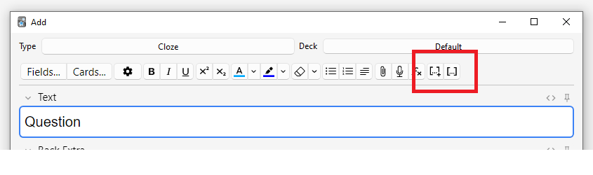
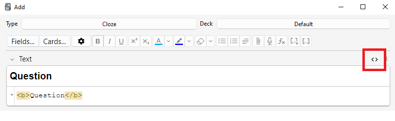
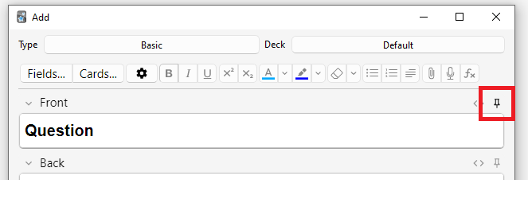
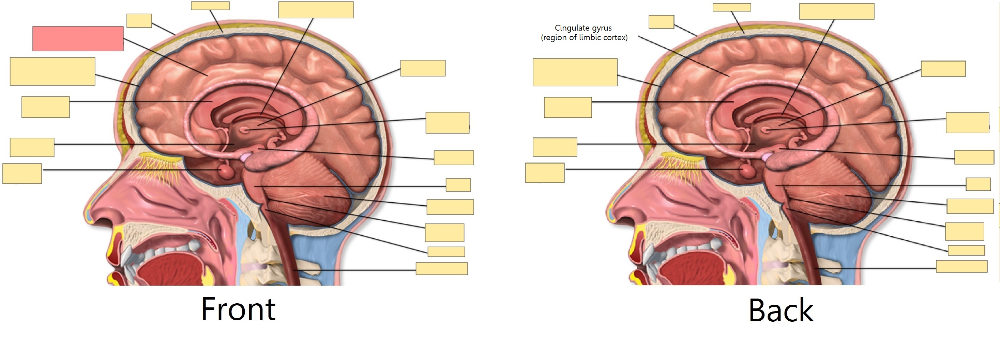
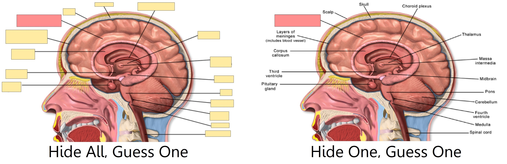

Qoʻshish va tahrirlash
Karta va yozuvlar qoʻshish
Asoslardan esingizda boʻlsa, Anki'da biz kartalarni emas, yozuvlarni qoʻshamiz, kartalarni esa Anki oʻzi yaratadi. Asosiy oynada Add (Qoʻshish) tugmasini bosing, Add Notes (Yozuv qoʻshish) oynasi paydo boʻladi.

Oynaning yuqori chap tomonida joriy yozuv turi koʻrsatilgan. Unda "Basic" deb yozilmagan boʻlsa, ulashilgan toʻplamni yuklab olganingizda baʼzi yozuv turlari qoʻshilgan boʻlishi mumkin. Quyidagi matn "Basic" tanlangan deb hisoblaydi.
Oynaning yuqori oʻng tomonida kartalar qoʻshiladigan toʻplam koʻrsatilgan. Kartalarni yangi toʻplamga qoʻshmoqchi boʻlsangiz, toʻplam nomi tugmasini bosib, keyin Add (Qoʻshish) ni bosing.
Yozuv turining pastida bir nechta tugma va "Front" (Old tomon) hamda "Back" (Orqa tomon) deb yozilgan maydonlar koʻrinadi. Front va Back maydonlar deb ataladi va ularni yuqoridagi "Fields…" (Maydonlar…) tugmasini bosib qoʻshishingiz, oʻchirishingiz va nomini oʻzgartirishingiz mumkin.
Maydonlarning pastida "tags" (teglar) deb yozilgan yana bir joy bor. Teglar — yozuvlaringizga biriktiradigan yorliqlar, ular yozuvlarni tartibga solish va topishni osonlashtiradi. Teglarni boʻsh qoldirishingiz yoki bir nechtasini qoʻshishingiz mumkin. Teglar probel bilan ajratiladi. Teglar joyida quyidagi yozuv boʻlsa:
vocab check_with_tutor
…qoʻshadigan yozuvingiz ikkita tegga ega boʻladi.
Old va orqa tomonga matn kiritib boʻlgach, yozuvni kolleksiyangizga qoʻshish uchun Add (Qoʻshish) tugmasini bosing yoki Ctrl+Enter (Mac'da Command+Enter) tugmalarini bosing. Shunda karta ham yaratilib, siz tanlagan toʻplamga joylanadi. Qoʻshgan kartangizni tahrirlamoqchi boʻlsangiz, tarix (history) tugmasini bosib, yaqinda qoʻshilgan kartani Browse oynasida qidirishingiz mumkin.
Yozuv turi bilan maydonlar orasidagi tugmalar haqida batafsil maʼlumot uchun tahrirlagich boʻlimiga qarang.
Takrorlanishni tekshirish
Anki birinchi maydonning noyobligini tekshiradi, shuning uchun, masalan, Front maydoni "apple" boʻlgan ikkita karta kiritsangiz, sizni ogohlantiradi. Noyoblikni tekshirish joriy yozuv turi bilan cheklangan, shuning uchun bir nechta til oʻrganayotgan boʻlsangiz va har bir til uchun alohida yozuv turi ishlatsangiz, Front maydoni bir xil boʻlgan ikkita karta takroriy deb hisoblanmaydi.
Anki samaradorlik sababli boshqa maydonlardagi takrorlarni avtomatik tekshirmaydi, lekin Browse oynasida "Find Duplicates" (Takrorlarni topish) funksiyasi bor, uni vaqti-vaqti bilan ishga tushirib turishingiz mumkin.
Samarali oʻrganish
Turli odamlar turlicha takrorlashni yoqtiradi, lekin yodda tutish kerak boʻlgan umumiy gʻoyalar bor. Ajoyib kirish sifatida SuperMemo saytidagi ushbu maqolani tavsiya qilamiz. Xususan:
-
Oddiy qiling: kartalaringiz qancha qisqa boʻlsa, ularni takrorlash shuncha oson. "Har ehtimolga qarshi" deb koʻp maʼlumot kiritgingiz kelishi mumkin, lekin bu takrorlashni tezda zerikarli qilib qoʻyadi.
-
Tushunmasdan yodlamang: til oʻrganayotgan boʻlsangiz, soʻzlarning katta roʻyxatlaridan qoching. Tillarni oʻrganishning eng yaxshi yoʻli — kontekstda, yaʼni soʻzlarni gap ichida koʻrib oʻrganish. Xuddi shunday, kompyuter kursini oʻrganayotgan boʻlsangiz, qisqartmalarning katta toʻdasini yodlashga urinsangiz, oldinga siljish juda qiyin boʻladi. Lekin qisqartmalar ortidagi tushunchalarni anglashga vaqt ajratsangiz, qisqartmalarni oʻrganish ancha osonlashadi.
Yozuv turi qoʻshish
Har tomonida faqat bitta soʻz yoki ibora boʻlgan oddiy kartalar uchun asosiy yozuv turlari yetarli, lekin old yoki orqa tomonga bir nechta maʼlumot kiritishni xohlab qolsangiz, bu maʼlumotni koʻproq maydonga ajratgan yaxshi.
"Menga faqat bitta karta kerak-ku, nega audio, rasm, maslahat va tarjimani Front maydoniga qoʻshib qoʻya qolmayman?" deb oʻylashingiz mumkin. Shunday qilishni xohlasangiz, mayli. Lekin bu usulning kamchiligi shundaki, barcha maʼlumot bir-biriga yopishib qoladi. Kartalarni maslahat boʻyicha saralamoqchi boʻlsangiz, buni qila olmaysiz, chunki u boshqa mazmun bilan aralashib ketgan. Shuningdek, audioni old tomondan orqa tomonga koʻchirish kabi ishlarni har bir yozuv uchun qoʻlda nusxalab-joylashtirmasdan qila olmaysiz. Mazmunni alohida maydonlarda saqlasangiz, kartalaringiz koʻrinishini keyinchalik oʻzgartirish ancha osonlashadi.
Yangi turdagi yozuv yaratish uchun Anki'ning asosiy oynasidan Tools > Manage Note Types (Asboblar > Yozuv turlarini boshqarish) ni tanlang. Keyin yangi yozuv turi qoʻshish uchun Add (Qoʻshish) ni bosing. Endi yangi turni qaysi yozuv turi asosida yaratishni tanlaydigan yana bir oyna koʻrinadi. "Add" yangi turni Anki bilan birga kelgan turlardan biri asosida yaratishni bildiradi. "Clone" (Nusxalash) yangi turni kolleksiyangizda allaqachon mavjud turlardan biri asosida yaratishni bildiradi. Masalan, fransuz tili soʻzlari uchun tur yaratgan boʻlsangiz, nemis tili soʻzlari uchun tur yaratishda uni nusxalashni xohlashingiz mumkin.
OK ni bosgach, sizdan yangi tur nomi soʻraladi. Bu yerda oʻrganayotgan mavzuingiz yaxshi tanlov: "Japanese", "Trivia" va shunga oʻxshash nomlar. Nom tanlagach, Note Types (Yozuv turlari) oynasini yoping, qoʻshish oynasiga qaytasiz.
Maydonlarni sozlash
Maydonlarni sozlash uchun yozuv qoʻshayotganda yoki tahrirlayotganda, yoxud Manage Note Types oynasida yozuv turi tanlangan paytda Fields... (Maydonlar...) tugmasini bosing.

Tegishli tugmalarni bosib, maydonlarni qoʻshishingiz, oʻchirishingiz yoki nomini oʻzgartirishingiz mumkin.
Maydonlar ushbu oynada va yozuv qoʻshish oynasida koʻrinadigan tartibni oʻzgartirish uchun joyini almashtirish (reposition) tugmasidan foydalanishingiz mumkin, u maydon egallashi kerak boʻlgan raqamli oʻrinni soʻraydi. Maydonni yangi birinchi maydon qilmoqchi boʻlsangiz, "1" deb kiriting.
Yoki maydon nomlarini sudrab tashlab (drag and drop) ham tartibini oʻzgartirishingiz mumkin. Buning uchun sichqoncha yoki barmogʻingiz bilan maydonni kerakli oʻringa sudrang. Koʻrsatkich maydon qayerga koʻchirilishini koʻrsatib turadi.
Maydon nomi sifatida "Tags", "Type", "Deck", "Card" yoki "FrontSide" ni ishlatmang, chunki ular maxsus maydonlar va toʻgʻri ishlamaydi.
Ekranning pastidagi opsiyalar kartalarni qoʻshish va tahrirlashda ishlatiladigan maydonlarning turli xususiyatlarini oʻzgartirish imkonini beradi. Bu takrorlash paytida kartalaringizda nima koʻrinishini sozlaydigan joy emas; buning uchun shablonlar boʻlimiga qarang.
-
Editing Font (Tahrirlash shrifti) yozuvlarni tahrirlashda ishlatiladigan shrift va oʻlchamni sozlash imkonini beradi. Bu muhim boʻlmagan maʼlumotni kichikroq qilish yoki oʻqish qiyin boʻlgan lotin boʻlmagan harflarni kattalashtirish uchun foydali. Bu yerda qilgan oʻzgarishlaringiz kartalarning takrorlash paytidagi koʻrinishiga taʼsir qilmaydi: buning uchun shablonlar boʻlimiga qarang. Biroq "javobni yozib kiritish" funksiyasini yoqqan boʻlsangiz, yozadigan matningiz shu yerda belgilangan shrift oʻlchamidan foydalanadi. (Javob yozayotganda shrift turini oʻzgartirish haqida javobingizni tekshirish boʻlimiga qarang.)
-
Sort by this field… (Shu maydon boʻyicha saralash…) Anki'ga bu maydonni Browse oynasidagi Sort Field (Saralash maydoni) ustunida koʻrsatishni buyuradi. Buni kartalarni shu maydon boʻyicha saralash uchun ishlatishingiz mumkin. Bir vaqtda faqat bitta maydon saralash maydoni boʻla oladi.
-
Reverse text direction (Matn yoʻnalishini teskari qilish) arab yoki ivrit kabi matnni oʻngdan chapga (RTL) koʻrsatadigan tillarni oʻrganayotgan boʻlsangiz foydali. Bu sozlama hozircha faqat tahrirlashni boshqaradi; matn takrorlash paytida toʻgʻri koʻrinishi uchun shablonni sozlashingiz kerak boʻladi.
-
Use HTML editor by default (Standart holatda HTML tahrirlagichdan foydalanish) maydonlarni toʻgʻridan-toʻgʻri HTML'da tahrirlashni yoqtirsangiz foydali.
-
Collapse by default (Standart holatda yigʻib qoʻyish). Maydonlarni yigʻish/yoyish mumkin. Animatsiyani sozlamalarda oʻchirib qoʻyish mumkin.
-
Exclude from unqualified searches (slower) (Aniqlanmagan qidiruvlardan chiqarib tashlash (sekinroq)) maʼlum maydon mazmuni aniqlanmagan (muayyan maydon bilan cheklanmagan) qidiruvlarda chiqmasligini xohlasangiz ishlatiladi.
Maydonlarni qoʻshganingizdan soʻng, ularni kartalaringizning old yoki orqa tomoniga qoʻshishni xohlaysiz. Bu haqida batafsil maʼlumot uchun shablonlar boʻlimiga qarang.
Toʻplam / yozuv turini oʻzgartirish
Qoʻshayotganda yozuv turini oʻzgartirish uchun yuqori chap tugmani, toʻplamni oʻzgartirish uchun yuqori oʻng tugmani bosishingiz mumkin. Ochiladigan oyna toʻplam yoki yozuv turini tanlashga imkon beribgina qolmay, yangi toʻplamlar qoʻshish yoki yozuv turlarini boshqarishga ham imkon beradi.
Mazmunni tartibga solish
Toʻplamlardan toʻgʻri foydalanish
Toʻplamlar mazmunni alohida oʻrganmoqchi boʻlgan keng kategoriyalarga ajratish uchun moʻljallangan, masalan, ingliz tili, geografiya va hokazo. Mazmunni tartibda saqlash uchun "mening geografiya kitobim, 1-bob" yoki "ovqat fe'llari" kabi koʻplab mayda toʻplamlar yaratishni xohlashingiz mumkin, lekin buni quyidagi sabablarga koʻra tavsiya etmaymiz:
-
Koʻplab mayda toʻplamlar kartalarni tanish tartibda koʻrib qolishingizga sabab boʻlishi mumkin. Eski rejalashtiruvchi (scheduler) versiyalarida yangi kartalar faqat toʻplamlar tartibida kiritiladi. Agar har bir toʻplamni navbatma-navbat bosib chiqmoqchi boʻlsangiz (bu sekin), "1-bob" yoki "ovqat fe'llari" takrorlashlarini birin-ketin koʻrasiz. Bu kartalarga javob berishni osonlashtiradi, chunki javobni kontekstdan taxmin qilasiz, bu esa zaifroq xotiraga olib keladi. Soʻz yoki iborani Anki'dan tashqarida eslash kerak boʻlganda, sizga har doim avval tegishli mazmunni koʻrsatishmaydi!
-
Anki'ning avvalgi versiyalaridagiga qaraganda kamroq muammo boʻlsa-da, yuzlab toʻplam qoʻshish sekinlashuvlarga olib kelishi mumkin, minglab elementli juda katta toʻplam daraxtlari esa Anki 2.1.50 dan oldingi versiyalarda toʻplamlar roʻyxatining koʻrinishini buzib qoʻyishi mumkin.
Teglardan foydalanish
Koʻplab mayda toʻplamlar yaratish oʻrniga, mazmunni tasniflash uchun teglar va/yoki maydonlardan foydalangan yaxshi. Teglar qidiruv natijalarini yaxshilash, aniq mazmunni topish va kolleksiyangizni tartibda saqlash uchun foydali usul. Teglardan va belgilardan (flags) samarali foydalanishning koʻp usullari bor, ularni qanday ishlatishni oldindan oʻylab qoʻyish sizga eng mos keladigan usulni tanlashga yordam beradi.
Baʼzilar kartalarini tartibda saqlash uchun toʻplam va ichki toʻplamlardan foydalanishni yoqtiradi, lekin buning uchun teglar toʻplamlarga nisbatan katta afzallikka ega: bitta yozuvga bir nechta teg qoʻshish mumkin, bitta karta esa faqat bitta toʻplamga tegishli boʻla oladi. Bu teglarni aksar hollarda toʻplamlarga qaraganda kuchliroq va moslashuvchan tasniflash tizimiga aylantiradi. Teglarni ham toʻplamlardagi kabi daraxt shaklida tartibga solishingiz mumkin.
Masalan, "ovqat fe'llari" toʻplamini yaratish oʻrniga, bu kartalarni asosiy til oʻrganish toʻplamingizga qoʻshib, "food" va "verb" teglari bilan belgilashingiz mumkin. Har bir kartada bir nechta teg boʻlishi mumkinligi uchun barcha fe'llarni, barcha ovqatga oid soʻzlarni yoki ovqatga oid barcha fe'llarni qidirish kabi ishlarni qila olasiz.
Teglarni Edit (Tahrirlash) oynasidan va Browse oynasidan qoʻshishingiz mumkin, shuningdek, u yerda teglarni oʻchirish, nomini oʻzgartirish yoki tartibga solish ham mumkin. Teglar yozuv darajasida ishlashini unutmang: qardosh kartalari bor kartaga teg qoʻysangiz, barcha qardosh kartalar ham shu teg bilan belgilanadi. Faqat bitta kartaga teg qoʻyish, uning qardoshlariga esa qoʻymaslik kerak boʻlsa, belgilardan (flags) foydalanishni oʻylab koʻring.
Belgilardan foydalanish
Belgilar (flags) teglarga oʻxshaydi, lekin ular oʻrganish paytida takrorlash oynasida, ekranning yuqori oʻng qismida rangli bayroqcha belgisi bilan koʻrinadi. Belgilangan kartalarni Browse oynasida qidirishingiz, belgilar nomini Browse oynasidan oʻzgartirishingiz va belgilangan kartalardan filtrlangan toʻplamlar yaratishingiz ham mumkin, lekin teglardan farqli ravishda bitta kartada bir vaqtda faqat bitta belgi boʻla oladi. Yana bir muhim farq: belgilar karta darajasida ishlaydi, shuning uchun qardosh kartalari bor kartani belgilash uning qardoshlariga taʼsir qilmaydi.
Kartalarni toʻgʻridan-toʻgʻri takrorlash rejimida belgilashingiz / belgisini olib tashlashingiz mumkin (Windows'da
Ctrl+1-7, Mac'da Cmd+1-7 tugmalarini bosib) hamda Browse oynasidan.
"Marked" tegi
Anki "marked" (belgilangan) nomli tegni alohida ishlatadi. Takrorlash va Browse oynalarida "marked" tegini qoʻshish va olib tashlash opsiyalari bor. Joriy kartaning yozuvida shu teg boʻlsa, oʻrganish oynasida yulduzcha koʻrsatiladi. Yozuvi belgilangan kartalar Browse oynasida boshqa rangda koʻrsatiladi.
Eslatma: belgilash (marking) asosan Anki'ning eski versiyalari bilan moslik uchun qoldirilgan; koʻpchilik foydalanuvchilar buning oʻrniga belgilar (flags) dan foydalanishni xohlaydi.
Maydonlardan foydalanish
Juda tartibli boʻlishni yoqtiradiganlar mazmunni tasniflash uchun yozuvlariga
"book" (kitob), "page" (sahifa) va shunga oʻxshash maydonlar qoʻshishi mumkin.
Anki muayyan maydonlar ichida qidirishni qoʻllab-quvvatlaydi, yaʼni
"book:my book" page:63 kabi qidiruv qilib, kerakli narsangizni darhol
topishingiz mumkin.
Maxsus oʻrganish va filtrlangan toʻplamlar
Maxsus oʻrganish va filtrlangan toʻplamlar yordamida qidiruv soʻzlaridan vaqtinchalik toʻplamlar yaratishingiz mumkin. Bu mazmunni koʻp vaqt bitta toʻplamda aralash holda takrorlash (eng yaxshi xotira uchun), lekin test oldidan kabi muayyan materialga eʼtibor qaratish kerak boʻlganda vaqtinchalik toʻplamlar yaratish imkonini beradi. Umumiy qoida: biror mazmunni doim alohida oʻrganishni xohlasangiz, u oddiy toʻplamda boʻlishi kerak; uni faqat ba'zan alohida oʻrganish kerak boʻlsa (test uchun, orqada qolganda va hokazo), teglar, belgilar, belgilangan kartalar yoki maydonlardan yaratilgan filtrlangan toʻplamlar yaxshiroq.
Tahrirlash imkoniyatlari
Tahrirlagich yozuv qoʻshganda, takrorlash paytida yozuvni tahrirlaganda yoki Browse oynasida koʻrib chiqqanda koʻrsatiladi.

Yuqori chap tomonda ikkita tugma bor, ular maydonlar va kartalar oynalarini ochadi.
Oʻng tomonda formatlashni boshqaradigan tugmalar bor. Qalin, kursiv va tagiga chizilgan matn matn muharrirlaridagi kabi ishlaydi. Keyingi ikki tugma matnni pastki yoki yuqori indeksga oʻtkazadi, bu H2O kabi kimyoviy birikmalar yoki x2 kabi oddiy matematik tenglamalar uchun foydali. Undan keyin matn rangini oʻzgartiradigan ikkita tugma bor.
Oʻchirgich (rubber eraser) tugmasi tanlangan matndagi barcha formatlashni tozalaydi, jumladan matn rangi, qalin yoki yoʻqligi va hokazo. Keyingi uch tugma roʻyxatlar yaratish, matnni tekislash va matn chekinishi uchun.
Qisqich (paper-clip) tugmasi yordamida kompyuteringizning qattiq diskidan audio, rasm va videolarni tanlab, yozuvlaringizga biriktirishingiz mumkin. Yoki mediani kompyuteringizning almashish buferiga nusxalab (masalan, internetdagi rasmni sichqonchaning oʻng tugmasi bilan bosib, "Copy Image" ni tanlab) kerakli maydonga joylashtirishingiz mumkin. Media haqida batafsil maʼlumot uchun media boʻlimiga qarang.
Mikrofon belgisi kompyuteringiz mikrofonidan yozib olish va yozuvni yozuvga biriktirish imkonini beradi.
Fx tugmasi yozuvlaringizga MathJax yoki LaTeX qoʻshish uchun tezkor tugmalarni koʻrsatadi.
[…] tugmalari cloze yozuv turi tanlanganda koʻrinadi.

</> tugmasi maydonning asosidagi HTML'ni tahrirlash imkonini beradi.

Anki 2.1.45 va undan yangi versiyalar doimiy (sticky) maydonlarni toʻgʻridan-toʻgʻri tahrirlash ekranidan sozlashni qoʻllab-quvvatlaydi. Maydonning oʻng tomonidagi pin (qadash) belgisini bossangiz, yozuv qoʻshilgandan keyin Anki maydon mazmunini tozalamaydi. Bir xil mazmunni bir nechta yozuvga kiritayotgan boʻlsangiz, bu foydali boʻlishi mumkin. Oldingi Anki versiyalarida doimiy maydonlar Fields (Maydonlar) oynasidan yoqilgan.

Tugmalarning koʻpchiligida tezkor tugmalar bor. Tezkor tugmani koʻrish uchun sichqoncha koʻrsatkichini tugma ustiga olib borishingiz mumkin.
Matnni joylashtirayotganda Anki standart holatda formatlashning koʻp qismini saqlaydi. Joylashtirayotganda Shift tugmasini bosib tursangiz, Anki formatlashning koʻp qismini olib tashlaydi. Preferences (Sozlamalar) ostida "Paste without shift key strips formatting" (Shift tugmasisiz joylashtirganda formatlash olib tashlansin) opsiyasini yoqib-oʻchirib, standart xulq-atvorni oʻzgartirishingiz mumkin.
Cloze deletion (matnning bir qismini yashirish)
Cloze deletion — gapdagi bir yoki bir nechta soʻzni yashirish jarayoni. Masalan, sizda quyidagi gap boʻlsa:
Canberra was founded in 1913.
…va "1913" ustida cloze deletion yaratsangiz, gap quyidagicha boʻladi:
Canberra was founded in [...].
Ba'zan bunday olib tashlangan qismlar "yopilgan" (occluded) deyiladi.
Cloze deletion'dan nima uchun foydalanishni xohlashingiz haqida batafsil maʼlumot uchun bu yerdagi 5-qoidaga qarang.
Anki cloze'larni yaratishni osonlashtirish uchun maxsus cloze deletion yozuv turini taqdim etadi. Cloze deletion yozuvini yaratish uchun Cloze yozuv turini tanlang va "Text" maydoniga matn kiriting. Keyin yashirmoqchi boʻlgan matn ustida sichqonchani sudrab uni tanlang va […] tugmasini bosing. Anki matnni quyidagi bilan almashtiradi:
Canberra was founded in {{c1::1913}}.
"c1" qismi gapda bitta cloze deletion yaratganingizni bildiradi. Xohlasangiz, bir nechta yashirish yaratishingiz mumkin. Masalan, Canberra'ni tanlab, yana […] ni bossangiz, matn endi quyidagicha koʻrinadi:
{{c2::Canberra}} was founded in {{c1::1913}}.
Yuqoridagi yozuvni qoʻshganingizda Anki ikkita karta yaratadi. Birinchi karta shuni koʻrsatadi:
Canberra was founded in [...].
…savol tomonida, javob tomonida esa toʻliq gap. Ikkinchi kartaning savol tomonida quyidagi boʻladi:
[...] was founded in 1913.
Shuningdek, bir kartada bir nechta qismni ham yashirishingiz mumkin. Yuqoridagi misolda c2 ni c1 ga oʻzgartirsangiz, faqat bitta karta yaratiladi va unda Canberra ham, 1913 ham yashirilgan boʻladi. Cloze yaratayotganda Alt (Mac'da Option) tugmasini bosib tursangiz, Anki raqamni oshirish oʻrniga avtomatik ravishda bir xil raqamdan foydalanadi.
Cloze deletion soʻz chegaralariga toʻgʻri kelishi shart emas, shuning uchun yuqoridagi misolda "Canberra" oʻrniga "anberra" ni tanlasangiz, savol "C[…] was founded in 1913" koʻrinishida chiqadi va bu sizga maslahat boʻladi.
Shuningdek, matnga mos kelmaydigan maslahatlar ham berishingiz mumkin. Asl gapni quyidagi bilan almashtirsangiz:
Canberra::city was founded in 1913
…va "Canberra::city" ni tanlab […] ni bossangiz, Anki ikki nuqtadan keyingi matnni maslahat deb hisoblab, matnni quyidagicha oʻzgartiradi:
{{c1::Canberra::city}} was founded in 1913
Karta takrorlash uchun chiqqanda u quyidagicha koʻrinadi:
[city] was founded in 1913.
Cloze deletion'ni toʻgʻri yozib kiritish qobiliyatingizni sinash haqida maʼlumot uchun javoblarni yozib kiritish boʻlimiga qarang.
2.1.56 versiyasidan boshlab ichma-ich (nested) cloze deletion'lar qoʻllab-quvvatlanadi. Masalan, quyidagisi yaroqli:
{{c1::Canberra was {{c2::founded}}}} in 1913
Ichki cloze tashqisining ichida butunlay joylashgan. Qisman ustma-ust tushish qoʻllab-quvvatlanmaydi, masalan:
[...] founded in 1913 -> Canberra was
Canberra [...] in 1913 -> was founded
bunda "was" soʻzi ikkala yashirishda ham ishtirok etadi.
Joriy amalga oshirish faqat cheklangan miqdordagi ichma-ich joylashuvni qoʻllay oladi. Anki 24.11 da bu 3 daraja. Boshqa versiyalarda chegara taxminan 8, lekin chegaraga yaqinlashganda Anki sekinlashishi mumkin. Chegarani oshirib boʻlmaydi. Bu imkoniyatdan foydalansangiz, ichma-ich joylashuvni bir necha daraja bilan cheklashni tavsiya qilamiz.
2.1.56 versiyasidan oldin ustma-ust tushadigan matndan cloze yaratish kerak boʻlsa, cloze'ingizga yana bitta Text maydoni qoʻshib, uni shablonga kiritasiz va yozuv yaratayotganda matnni ikkita alohida maydonga joylashtirasiz, mana bunday:
Text1 field: {{c1::Canberra was founded}} in 1913
Text2 field: {{c2::Canberra}} was founded in 1913
Standart cloze yozuv turida Extra (Qoʻshimcha) deb nomlangan ikkinchi maydon bor, u har bir kartaning javob tomonida koʻrsatiladi. Undan foydalanish boʻyicha eslatmalar yoki qoʻshimcha maʼlumot qoʻshish uchun foydalanish mumkin.
Cloze yozuv turi Anki tomonidan alohida ishlanadi va oddiy yozuv turi asosida yaratib boʻlmaydi. Uni sozlamoqchi boʻlsangiz, boshqa turdagi yozuvni emas, mavjud Cloze turini nusxalashingiz kerak. Formatlash kabi narsalarni sozlash mumkin, lekin cloze yozuv turiga qoʻshimcha karta shablonlari qoʻshib boʻlmaydi.
Anki endi bitta cloze deletion'ning bir nechta kartada chiqishiga imkon beradigan yangi sintaksisni qoʻllab-quvvatlaydi:
{{c1::-té}}, {{c2::-sion}}, or {{c3::-tion}} are {{c1,2,3,4::feminine}}.
Bu 4 ta karta yaratadi, ularning har birida "feminine" boshqa kontekstda yashirilgan. Xuddi shu natijaga eski ichma-ich sintaksis bilan ham erishish mumkin:
{{c1::-té}}, {{c2::-sion}}, {{c3::-tion}} are {{c4::{{c3::{{c2::{{c1::feminine}}}}}}}}
Yangi sintaksisni oʻqish va yozish osonroq, eski sintaksis esa ancha uzunroq.
Image Occlusion (rasm qismlarini yashirish)
Anki 23.10 va undan yangi versiyalar Image Occlusion kartalarini (rasm qismlarini yashirish kartalari) toʻgʻridan-toʻgʻri qoʻllab-quvvatlaydi. Image Occlusion (IO) yozuvi — matn oʻrniga rasmga asoslangan cloze deletion'ning alohida turi, u rasmning baʼzi qismlarini yashiradigan va shu yashirin maʼlumot boʻyicha bilimingizni tekshiradigan kartalar yaratish imkonini beradi.

Rasm qoʻshish
Kolleksiyangizga IO kartalarini qoʻshish uchun Add (Qoʻshish) oynasini oching, "Type" (Tur) ni bosib, oʻrnatilgan yozuv turlari roʻyxatidan "Image Occlusion" ni tanlang. Keyin kompyuteringizning qattiq diskida saqlangan rasm faylini yuklash uchun Select Image (Rasmni tanlash) ni bosing yoki almashish buferida rasm nusxalangan boʻlsa, Paste image from clipboard (Rasmni almashish buferidan joylashtirish) ni bosing.
IO kartalarini qoʻshish
Rasmni yuklagach, IO tahrirlagichi ochiladi. Rasmingizga istalgancha hudud qoʻshish uchun chap tomondagi belgilarni bosing. Tanlash uchun uchta asosiy shakl bor:
- Toʻrtburchak (Rectangle)
- Ellips (Ellipse)
- Koʻpburchak (Polygon)
Shuningdek, har bir yozuv uchun ikki xil IO rejimidan birini tanlashingiz mumkin:
- Hide All, Guess One (Hammasini yashirish, bittasini topish): Barcha hududlar yashirilgan va oʻrganish paytida bir vaqtda faqat bitta hudud ochiladi.
- Hide One, Guess One (Bittasini yashirish, bittasini topish): Bir vaqtda faqat bitta hudud yashirilgan va oʻrganish paytida ochiladi. Boshqa hududlar koʻrinib turadi.

Standart IO yozuv turida ham standart maydonlar bor: Header (Sarlavha) (har bir kartaning old va orqa tomonida rasm ustida koʻrsatiladi), Back Extra (Orqa tomon qoʻshimchasi) (har bir kartaning orqa tomonida rasm ostida koʻrsatiladi) va Comments (Izohlar) (kartalarda koʻrsatilmaydi). Ularga IO tahrirlagichidan kirish uchun Toggle Mask Editor (Niqob tahrirlagichini yoqish/oʻchirish) tugmasini bosing. U yerda yozuvning Tags (Teglar) ini ham koʻrishingiz va tahrirlashingiz mumkin.
Tugatgach, ekranning pastidagi "Add" (Qoʻshish) tugmasini bosing. Anki oldingi bosqichda qoʻshgan har bir shakl yoki shakllar guruhi uchun bittadan karta qoʻshadi va siz ularni odatdagidek takrorlashni boshlashingiz mumkin.
IO yozuvlarini tahrirlash
IO yozuvlaringizni takrorlash paytida "Edit" (Tahrirlash) ni bosib yoki toʻgʻridan-toʻgʻri Browse oynasidan tahrirlashingiz mumkin. Foydalanishingiz mumkin boʻlgan bir nechta vosita bor. Muhimlari:
- Select (Tanlash): bir yoki bir nechta shaklni tanlab, koʻchirish, oʻlchamini oʻzgartirish, oʻchirish yoki guruhlash imkonini beradi.
- Zoom (Masshtab): rasmni erkin siljitish va sichqoncha gʻildiragi bilan kattalashtirish yoki kichraytirish mumkin.
- Shakllar (Rectangle, Ellipse yoki Polygon): yangi shakllar / kartalar qoʻshish uchun ishlating.
- Text (Matn): rasmga matn hududlarini qoʻshadi. Bu matn hududlarini koʻchirish, oʻlchamini oʻzgartirish yoki oʻchirish mumkin, lekin bu vosita ishlatilganda karta yaratilmaydi.
- Undo / Redo (Bekor qilish / Qaytarish).
- Zoom In / Out - Reset zoom (Kattalashtirish / kichraytirish - masshtabni tiklash).
- Toggle Translucency (Shaffoflikni yoqish/oʻchirish): yashirin hududlarni vaqtincha koʻrish uchun ishlating.
- Delete (Oʻchirish): tanlangan shakllar va matn hududlarini oʻchirish uchun ishlating. Shaklni oʻchirish unga bogʻliq kartani avtomatik oʻchirmasligini unutmang; buning uchun keyin Tools>Empty Cards ni ishlatishingiz kerak, xuddi oddiy cloze deletion'lardagi kabi.
- Duplicate (Nusxa olish).
- Group selection (Tanlanganni guruhlash): shakllar toʻplamini yaratish uchun ishlating, bu ularni bir vaqtda koʻchirish, oʻlchamini oʻzgartirish yoki oʻchirishga imkon beradi. Ikki yoki undan koʻp yakka shakl guruhlanganda faqat bitta karta yaratilishini unutmang.
- Ungroup selection (Guruhni ajratish): guruhni tanlab, bu tugmani bossangiz, har bir shakl yana mustaqil boʻladi.
- Alignment (Tekislash): bu vosita shakllar / matn hududlarini xohlaganingizdek tekislash uchun ishlatiladi.
IO kartalarini takrorlash paytida rasmning pastida "Toggle Masks" (Niqoblarni yoqish/oʻchirish) tugmasi paydo boʻladi. Bu tugma "Hide All, Guess One" rejimida yozuvning barcha shakllarini vaqtincha olib tashlaydi.
Lotin boʻlmagan belgilar va urgʻularni kiritish
Barcha zamonaviy kompyuterlarda urgʻular va lotin boʻlmagan belgilarni yozish uchun ichki qoʻllab-quvvatlash va buning bir nechta usuli bor. Biz tavsiya qiladigan usul — oʻrganmoqchi boʻlgan tilingiz uchun klaviatura raskladkasidan foydalanish.
Yapon, xitoy, tay va shu kabi alohida yozuvli tillarning oʻsha tilga xos raskladkalari bor.
Urgʻuli yevropa tillarining oʻz raskladkasi boʻlishi mumkin, lekin ularni koʻpincha oddiy "xalqaro klaviatura" raskladkasida ham yozish mumkin. Ular shunday ishlaydi: avval urgʻuni, keyin urgʻu qoʻyilishi kerak boʻlgan belgini yozasiz, masalan, apostrof (´) va keyin a harfi (a) á ni beradi.
Xalqaro klaviatura raskladkalarini qoʻshish
Xalqaro klaviaturalardan foydalanish boʻyicha yoʻriqnomalar siz ishlatayotgan operatsion tizim va ish stoli muhitiga qarab farq qiladi. Boshlash uchun quyidagi havolalarga qarang.
Windows:
Mac:
Linux:
- Gnome: https://help.gnome.org/gnome-help/tips-specialchars.html
- KDE Plasma: https://userbase.kde.org/Tutorials/ComposeKey
Muayyan tillar uchun klaviatura raskladkalarini qoʻshish
Muayyan tillar uchun klaviaturalar xuddi shunday qoʻshiladi, lekin hammasini bu yerda yoritib boʻlmaydi. Batafsil maʼlumot uchun internetdan "input Japanese on a mac", "type Chinese on Windows 10" va shunga oʻxshash soʻrovlarni qidirib koʻring.
Linux uchun distributivingizning wiki sahifalariga qarash eng yaxshisi,
masalan, Arch Linux va
Debian Linux.
Misol tariqasida, Debian'da apt install ibus-anthy hiragana belgilarini
yozish imkonini beradi.
Oʻngdan chapga yoziladigan tillar
Oʻngdan chapga yoziladigan tilni oʻrganayotgan boʻlsangiz, hisobga olish kerak boʻlgan boshqa koʻp narsalar bor. Batafsil maʼlumot uchun ushbu sahifaga qarang.
Cheklovlar
Anki qurilgan vositalar toʻplami (toolkit) baʼzi kiritish usullari bilan muammoga duch keladi, masalan, macOS'da urgʻuli belgilarni tanlash uchun tugmalarni bosib turish va Windows'da Alt tugmasini bosib turib raqamli kod yozish orqali belgilar kiritish.
Unicode normallashtirish
á kabi matn kompyuterda bir necha usulda ifodalanishi mumkin, masalan, shu
belgi uchun maxsus koddan foydalanish yoki oddiy a va uning ustidagi urgʻu
uchun boshqa koddan foydalanish. Bu turli manbalardan kiritilgan matnni
aralashtirganda yoki turli kompyuterlardan foydalanganda muammo tugʻdiradi:
kompyuteringiz klaviatura kiritishini bir shaklda ishlasa, mazmun esa boshqa
shaklda saqlangan boʻlsa, qidirganda ular mos kelmaydi, garchi yakuniy natija
bir xil koʻrinsa ham.
Mazmun qidiruvlarda oson topilishini taʼminlash uchun Anki matnni standart shaklga keltiradi (normallashtiradi). Koʻpchilik foydalanuvchilar uchun bu jarayon sezilmaydi, lekin eski yapon belgilari kabi ayrim materiallarni oʻrganayotgan boʻlsangiz, normallashtirish ularni zamonaviyroq ekvivalentiga aylantirib qoʻyishi mumkin.
Belgilar variantlari saqlanib qolishini xohlasangiz, debug console (xatolarni aniqlash konsoli) da quyidagini bajarish normallashtirishni oʻchiradi:
mw.col.conf["normalize_note_text"] = False
Shundan keyin qoʻshilgan har qanday mazmunga tegilmaydi. Buning evaziga, operatsion tizimlar orasida almashsangiz yoki aralash manbalardan mazmun joylashtirsangiz, mazmunni qidirish qiyinlashishi mumkin.